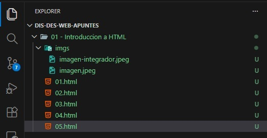

Voy a desarrollar una pagina que integre todos los conceptos aprendidos de manera practica, como lo estoy haciendo ahora mismo.
En primer lugar, cree la base de mis paginas, utilizando el contenido de la pagina 01.html que contenia la estructura básica de una página web. Opte por crear un navbar con enlaces a cada uno de los diferentes archivos de la entrega para mejorar la navegacion interna.
Aqui me pregunte que cosas podria incluir para profundizar el head de mis paginas?
Ahi es donde entraria el concepto SEO para mejorar la ubicacion de mi pagina web en motores de busqueda a partir de keywords dentro de etiquetas meta (si es que estuviese hosteada al publico).
Luego, fui ejercicio por ejercicio creando cada una de las paginas, con una breve explicacion de que etiquetas estaba usando y con que criterio y metodo, basandome en los Links de referencia provistos, como el de W3Schools, el de Mozilla Developer Network y el de HTML Cheat Sheet.
Finalmente, me quedo una carpeta similar a esto

Que cosas podria incluir para profundizar el body de mis paginas?
Que contenido podria incluir para mostrar un ejemplo practico de cada uno de los conceptos aprendidos?
Que elementos extras pueden traer mayor valor a mis paginas?
por lo tanto, decidi seguir este siguiente plan de accion para crear esta pagina integradora: